لماذا منهجية أصلًا؟
نمطٌ شائع: يُعطي شخصٌ محادثةً آلية طلبًا غامضًا، يستلم شيئًا يبدو صحيحًا، فيستخدمه. وبعد أسبوعين يظهر الخطأ. الحلّ ليس محادثةً آلية أفضل، بل طريقةً أفضل لاستخدامها.
المنهجية في هذه الوحدة هي ذاتها سواء كان الذكاء الاصطناعي الذي تُوجّهه محادثةً (تكتب فيكتب)، أو وكيلًا (يستطيع القراءة والتخطيط والتصرّف بمفرده عبر خطوات كثيرة)، أو فريقًا من البشر. تنطبق على الميزانيات والمذكّرات والعروض والكود ومراجعة المستندات وتقريبًا أي عمل معرفي غير تافه. بُنيت حول أربع مراحل.
المراحل الأربع
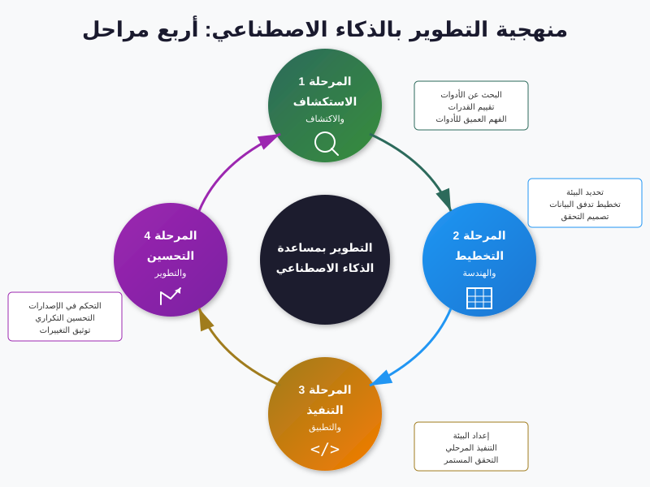
1. الاستكشاف
قبل أن تطلب من الذكاء الاصطناعي شيئًا، افهم الأرض. ما المواد المتوفّرة؟ ما تنسيق البيانات؟ من حلَّ هذه المشكلة من قبل؟ ما القيود؟ حين تتجاوز الاستكشاف تنتهي بإجابة جميلة عن السؤال الخطأ.
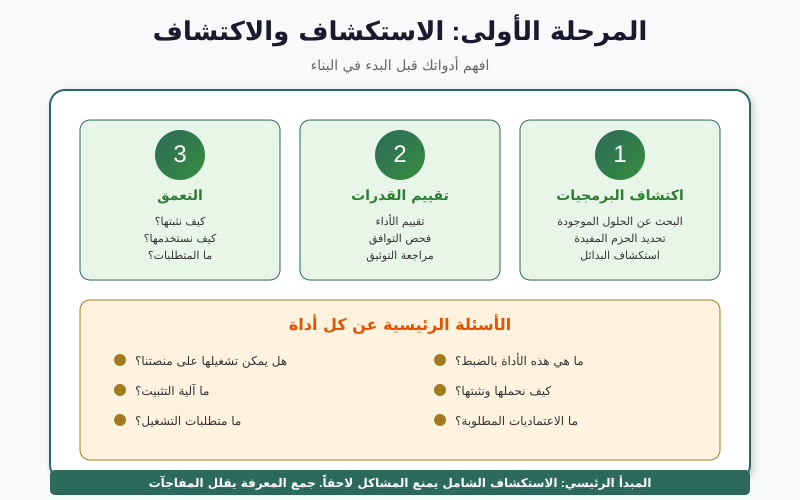
2. التخطيط
قرّر المنهج قبل أن تبدأ بإنتاج المخرجات. الأسئلة الأربعة أدناه تفرض هذا. التخطيط رخيص؛ وإعادة العمل مكلفة.
3. التنفيذ
الآن تنفّذ — أو، الأكثر فائدة، تُوجّه الذكاء الاصطناعي ليُنفّذ في تكرارات قصيرة. ارفع قطعة، استلم نتيجة، احفظها، تحقّق منها، كرّر. الذكاء الاصطناعي يُولّد؛ وأنت تتحقّق.
4. التحسين
حين توجد المسوَّدة الأولى، يصبح التحسين أرخص بكثير من الكتابة من الصفر. حسّن المحتوى، أزل ما لا يستحقّ مكانه، تحقّق من أيّ شيء تستند إليه، ثم سلِّم. وبعد التسليم، تعلّم ما لم ينجح — وأَدخِله مدخلًا في استكشاف الجولة التالية.
الأسئلة الأربعة الحاسمة في التخطيط
قبل أن تطلب من الذكاء الاصطناعي البدء، أجب أنت عن هذه الأسئلة الأربعة. إن لم تستطع، فلن يستطيع هو أيضًا.
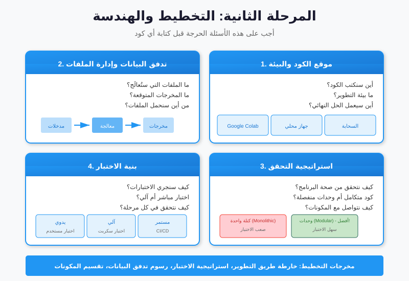
- ما المخرَج الفعلي؟ مذكّرة؟ جدول؟ قائمة نقاط نقاش؟ كن دقيقًا.
- من الجمهور؟ مدير لديه خمس دقائق؟ فريق تقني؟ وزير؟ المحتوى نفسه يحتاج تأطيرًا مختلفًا لكلٍّ.
- ما المدخلات التي يحتاجها الذكاء الاصطناعي؟ مسوّدة، أمثلة سابقة، مستندات مصدر، البيانات نفسها. إذا لم تكن تتوقّع من زميل مبتدئ أن يفعل ذلك دون هذه المدخلات، فالذكاء الاصطناعي لن يستطيع كذلك.
- كيف ستعرف أنه جيّد؟ قرّر معايير القبول قبل رؤية المخرَج. وإلا فإمّا أن تقبل نتيجة معيبة لأنها تبدو مصقولة، أو ترفض نتيجة جيّدة لأنها لا تطابق النسخة في رأسك.
اختبر بنفسك
اختر المذكّرة أو التقرير القادم في قائمتك. حاول الإجابة عن الأسئلة الأربعة كتابةً قبل فتح ChatGPT. لاحظ كم مرّة يكون السؤال الرابع (معايير القبول) هو الذي لم تفكّر فيه قطّ.
الدورة التكرارية
الحلقة السداسية التي تُشغّلها أثناء التنفيذ، مرارًا، في دورات قصيرة:
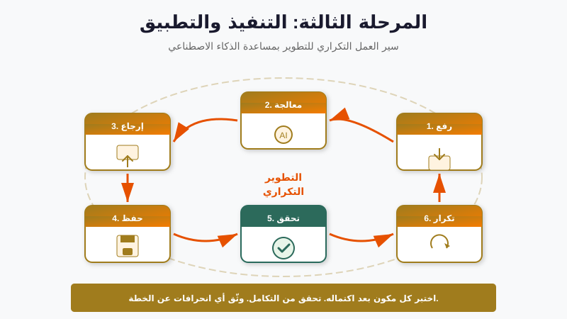
- ارفع. أعطِ الذكاء الاصطناعي ما يكفي من السياق لهذه الخطوة فقط — لا للمشروع كله. السياق الأكثر ليس دائمًا أفضل؛ كثيرًا ما يكون ضوضاء.
- عالج. الذكاء الاصطناعي يُولّد. وأنت تفكّر فيما يبدو الجيّد عليه.
- اقرأ. اقرأ النتيجة. لا تتصفّحها. اقرأها كمحرّر.
- احفظ. إن كانت جيّدة (أو جيّدة جزئيًا)، احفظها خارج المحادثة — مستند، ملف، دفتر. المحادثات عابرة؛ عملك ينبغي ألا يكون.
- تحقّق. تحقّق من الأجزاء الجوهرية. الأرقام والأسماء والتواريخ والمراجع — أيّ شيء تستند إليه.
- كرّر. خذ الشريحة التالية ومرّرها عبر الحلقة.
أكثر نمط فشل شيوعًا
تجاوز الحفظ. يستمرّ الناس في العمل داخل المحادثة، يشاهدون تقدّمهم يتمرّر بعيدًا للأعلى، حتى ينكسر شيء فلا يستطيعون استعادة النسخة من اثنتي عشرة دورة سابقة. احفظ خارج المحادثة باكرًا وكثيرًا.
الاختبار متعدّد المستويات
لن تقبل معادلة Excel دون التحقّق منها على صفّ تستطيع تأكيده يدويًا. مخرَج الذكاء الاصطناعي يستحقّ نفس التسلسل من الفحوص. تقدّم هندسة البرمجيات إطارًا مفيدًا هنا — هرم الاختبار:
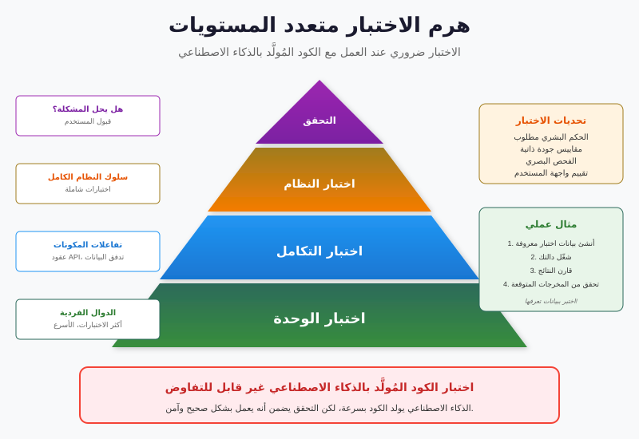
- على مستوى الوحدة (رخيصة، كثيرة). فحص قطع صغيرة. هل استشهدت هذه الفقرة بالتقرير الصحيح؟ هل يظهر هذا الرقم فعلًا في المصدر؟
- على مستوى التكامل (متوسطة). اقرأ قسمًا كاملًا من البداية إلى النهاية. هل تماسك الحجّة؟ هل تتبع النتيجة الجسم؟
- الشاملة (مكلفة، نادرة). دع قارئًا حقيقيًا يقرأ الكلّ — ويُفضَّل أن يكون من جمهورك المستهدف. راقب أين يتعثّر.
الانضباط هو فعل المزيد من الفحوص الرخيصة والأقلّ من المكلفة. كان يمكن اكتشاف معظم الأخطاء على مستوى الوحدة — رقم واحد خاطئ، اقتباس واحد منسوب لغير قائله.
إدارة نافذة السياق
لكل أداة ذكاء اصطناعي نافذة سياق — ما تستطيع الإمساك به في رأسها دفعة واحدة. نوافذ الأدوات الحديثة كبيرة جدًا (مئات الصفحات)، لكنها لا تزال محدودة، والأهم: السياق الأكثر ليس دائمًا أفضل. لصق سياسة من 200 صفحة حين 5 صفحات منها فقط مهمّة يُنتج نتائج أسوأ، لأن الذكاء الاصطناعي يضطر الآن لإيجاد الإشارة في الضوضاء.

ثلاث عادات تُحدث فرقًا حقيقيًا:
- اقتبس، لا تُلقِ. الصق الفقرة المهمّة، لا المستند كاملًا.
- أعد التركيز كل بضع دورات. «تذكير: نحن نكتب الملخّص التنفيذي لمدير تقنية المعلومات، لا الملحق التقني». المحادثات الطويلة تنسى.
- ابدأ من جديد حين يتغيّر النطاق. إن كنت تُحرّر مذكّرة لساعة وتريد الآن صياغة بيان صحفي، افتح محادثة جديدة. السياق القديم صار ضوضاء.
قائمة فحص المسؤولية
الذكاء الاصطناعي قام بالطباعة. أنت المسؤول عن ما في المستند. قبل إرسال أيّ شيء ساعد الذكاء الاصطناعي في إنتاجه، نفّذ هذه القائمة:
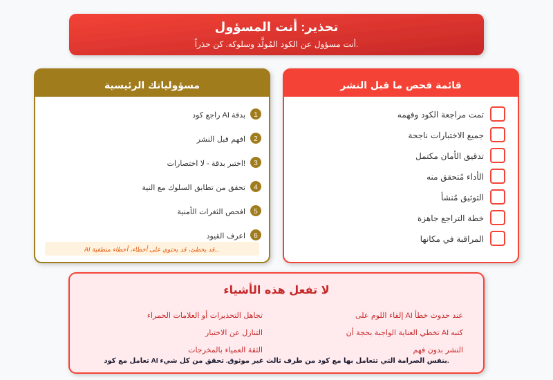
- كل اسم ورقم وتاريخ ومرجع جرى التحقّق منه أمام المصدر.
- لم تُشارَك أيّ معلومة حسّاسة (بيانات شخصية، أرقام مالية داخلية، معلومات مصنّفة) مع أداة لا ينبغي أن تحصل عليها — وسنتعمّق في هذا في الوحدة 3.
- النبرة تناسب الجمهور.
- الحجّة تماسكت دون الجمل التي أضفتها لأنها تبدو مُبهرة فقط.
- إن سُئلت، أستطيع أن أشرح كيف أُنتج هذا.
الوكلاء أثناء العمل
المحادثة تنتظرك لتكتب. أمّا الوكيل فيتلقّى هدفًا ويعمل عليه بنفسه — يقرأ الملفات، ويُشغّل الكود، ويستدعي أدوات، ويقرّر الخطوة التالية، ويُبلِّغ. تنطبق المراحل الأربع نفسها، لكنه يُشغّل دورات تنفيذ صغيرة كثيرة في الخفاء لكلّ ما تطلبه منه.
حلقة الوكيل بلغة بسيطة:
- اقرأ. انظر ماذا أمامه (ملف، نتيجة سابقة، رسالة المستخدم الأخيرة).
- خطّط. قرّر الخطوة الصغيرة التالية.
- اعمل. نفّذ الخطوة (شغِّل كود، اكتب ملف، استدعِ API).
- راقب. انظر ماذا عاد.
- كرّر. حتى يتحقّق الهدف أو يعلق.
الحلقة نفسها تصف محلّلًا مبتدئًا يعمل على مهمّة. الفرق أن الوكيل يفعل ذلك في ثوان، طوال اليوم، دون غداء. تلك السرعة هي المغزى — وهي الخطر. حين تكون الحلقة خاطئة، تكون خاطئة بسرعة.
عرض حيّ (يقوده المدرّب)
في الجلسة الحيّة سيُشغّل المدرّب وكيلًا (Claude Code أو ما يكافئه) على مهمّة واقعية: ملف CSV لسجلات موظّفين وهميّين تحتاج إلى فحص الشذوذ. تُعرض الشاشة الطرفية ويُعلَّق على كل دورة. لاحظ أيّ مرحلة من المراحل الأربع تنطبق على كل فعل من أفعال الوكيل.
وللتذوّق دون اتصال، يمكنك مشاهدة وكيلَين يلعبان لعبة غير تافهة في حلبة بلوت للذكاء الاصطناعي. لاحظ كيف أنّ كل حركة هي مخرَج حلقة قراءة-تخطيط-فعل-ملاحظة صغيرة.
عُدّة الوكلاء في 2026
«الوكيل» الذي ستلتقيه أوّلًا غالبًا هو وكيل برمجة. ليس لأن كل من في القاعة يكتب كودًا — معظمنا لا يكتب — بل لأن منظومة وكلاء البرمجة هي حيث تتشكّل المنهجيات والأدوات وأنماط الأمان أسرع من غيرها. وأي درسٍ يتبلّر هنا سيظهر في وكيلك المتخصّص (قانوني، موارد بشرية، مشتريات، دعم) خلال سنة.
خمس أدوات ينبغي أن تتعرّف عليها بالاسم حين يذكرها بائع أو فريق تقني:
| الأداة | ما هي | لماذا تهمّك |
|---|---|---|
| Claude Code | وكيل CLI من Anthropic — يعمل في طرفية، يحادث المشروع، يُحرّر الملفات. يتصدّر اختبار SWE-bench للبرمجة. | المرجع لـ«ما يبدو عليه الجيّد». مستضاف فقط. |
| OpenCode | وكيل CLI مفتوح المصدر يوجِّه إلى أكثر من 75 مزوّد LLM، بما في ذلك نماذج محلية. 140 ألف+ نجمة على GitHub في مطلع 2026. | البديل السياديّ. شغِّله على نموذج يعمل على عتادك — يربط مباشرةً بمفاضلة المُستضاف/المحلي في الوحدة 3. |
| OpenClaw | إطار وكيل مفتوح المصدر يتّصل بنماذج OpenAI وAnthropic؛ انتشر بقوّة في 2025. | حيث يجري معظم تجريب الوكلاء مفتوح المصدر؛ اسم سيستخدمه فريقك التقني. |
| Cursor | بيئة تطوير مخصَّصة مبنية حول وكيل. أضافت Cursor 3 (أبريل 2026) وكلاء سحابيين على أجهزة افتراضية معزولة. | الشكل الذي يأخذ هيئة IDE. مدفوع، مستضاف. |
| Cline / OpenHands | وكلاء مفتوحون يغطّيان طرفَي طيف الاستقلاليّة — Cline يعتمد كل فعل، OpenHands يعمل ذاتيًا. | معًا يُحدِّدان الخيار الذي على كل قائد اتّخاذه: ما مقدار الإنسان في الحلقة؟ |
طيف الاستقلاليّة
مهما كانت الأداة، السؤال الأهمّ على مستوى القائد ليس «أيّ وكيل؟»، بل «ما مقدار الاستقلاليّة الذي تمنحه؟». أربع نقاط على الطيف:
- اقتراح. الوكيل يقترح؛ والإنسان يقبل أو يرفض كل تغيير. الأبطأ، الأكثر أمانًا. وضع Cline الافتراضي.
- مُشرَف. الوكيل يفعل؛ والإنسان يراجع كل فعل فورًا. وضع معظم وكلاء البرمجة الافتراضي.
- مستقلّ ضمن حدود. الوكيل يُنفّذ مهمّة كاملة من البداية إلى النهاية؛ والإنسان يراجع النتيجة النهائية. مقبول حين يكون نطاق ضرر الفعل صغيرًا (بيئة معزولة، مسوّدة مستند، بيئة اختبار).
- مستقلّ كلّيًّا. الوكيل يعمل باستمرار، بلا مراجعة لكل مهمّة. مقبول فقط داخل مجالات ضيّقة جدًا مع احتواء قويّ (مثل: روبوت مستودع داخل منطقة مسوَّرة).
عرض حيّ جنبًا إلى جنب (يقوده المدرّب)
سيُشغّل المدرّب نفس المهمّة — فحص شذوذ ملف CSV — على Claude Code (مستضاف) وOpenCode موجَّه إلى نموذج محلي (سياديّ)، جنبًا إلى جنب. النسخة المحلية أبطأ بشكل واضح وأسوأ قليلًا. هذا التباين هو المغزى. يُكمل نقاش المُستضاف/المحلي في الوحدة 3.
MCP — منفذ USB-C للذكاء الاصطناعي
طوال 2024 كانت كل وصلة وكيل مخصَّصة: تكتب كودًا لتُعلِّم الوكيل قراءة Slack ونظام الملفات والـ CRM والتقويم. النتيجة: مئات التكاملات الفردية التي لا أحد يستطيع صيانتها.
بروتوكول سياق النموذج (MCP)، الذي أصدرته Anthropic أواخر 2024 وتولّت Linux Foundation حوكمته منذ ديسمبر 2025، يحلّ ذلك. معيار مفتوح بسيط: أيّ وكيل متوافق مع MCP يستطيع الحديث مع أيّ خادم MCP. كما يتيح USB-C لكابل واحد أن يخدم الحواسيب والهواتف والسمّاعات، يتيح MCP لوكيل واحد أن يتّصل بنظام الملفات وSlack وقواعد البيانات وأدواتك الداخلية وواجهات بائعيك — جميعها.
الأرقام
- 97 مليون تنزيل شهريّ لحزمة التطوير في مطلع 2026.
- أكثر من 10,000 خادم MCP متوفّر؛ أكثر من 177,000 أداة مسجَّلة.
- 78٪ من فِرَق الذكاء الاصطناعي المؤسّسية لديها على الأقلّ وكيل واحد قائم على MCP في الإنتاج (مقابل 31٪ قبل عام).
- OpenAI وGoogle وMicrosoft يدعمون MCP أصلًا. 92٪ من أُطر الوكلاء الجديدة الصادرة في 2025 والربع الأول من 2026 تأتي بدعم MCP مدمج.
لماذا يهمّ القائد
- قابلية تبديل البائعين. إذا كانت أدواتك وبائعوك يعرضون خوادم MCP، يمكنك تغيير الوكيل (والنموذج) المستهلك دون إعادة بناء كل شيء.
- قوّة تفاوضية. حين يُريد بائع تكبيلك بتكامله الخاصّ، اسأل «هل تشحن خادم MCP؟». الإجابة تُخبرك إن كنت تتعرّض للتكبيل.
- السيادة. خادم MCP يعمل حيث تضعه. بياناتك لا تحتاج إلى مغادرة المبنى ليستخدمها الوكيل.
- التدقيق. كل استدعاء MCP طلبٌ منفصل يمكنك تسجيله وتقييد معدّله وإلغاؤه. أسهل في الحوكمة من وكيل مستضاف يسحب البيانات عبر خط أنابيب البائع المعتم.
سؤال الشراء
حين يقترح فريقك التقني أو بائع وكيلًا يتّصل بأنظمتك، اسأل: «هل يستخدم MCP، أم تكامل مخصَّص؟». المخصَّص مقبول للنماذج التجريبية. أمّا أيّ شيء سيعيش أكثر من ستة أشهر، فـ MCP صار التوقّع الافتراضي.
الاستعلام بلغة طبيعية — البيانات بدون كود
قبل خمس سنوات كان سؤال «كم كان متوسّط زمن حلّ التذاكر في كل منطقة الربع الماضي؟» عن جدول بيانات يتطلّب إمّا استعلام SQL، أو جدول محوري، أو مكالمة لمحلّل. اليوم تلصق الجدول في ChatGPT أو Claude وتسأل بالعربية فتحصل على الإجابة.
يُسمّى ذلك أحيانًا الاستعلام بلغة طبيعية أو NQL. الذكاء الاصطناعي يقوم بنفس عمل البيانات الذي يقوم به محلّل — تحميل الملف، تقطيعه، التجميع — لكن الواجهة هي جملتك، لا لغة برمجة.
ثلاث ملاحظات عملية تهمّك:
- إنه يعمل. لأنواع التحليل التي يدعمها جدول من 5 صفحات، الإجابة عادةً صحيحة.
- الدقّة تعتمد على صياغتك. الأسئلة الغامضة تُنتج إجابات غامضة. «ما اتجاهنا؟» أضعف بكثير من «ارسم زمن الحلّ الأسبوعي حسب المنطقة في الربع الثالث، وأخبرني أيّ منطقة تغيّر اتجاهها أكثر».
- اطلب العمل، لا النتيجة فقط. اطلب من الذكاء الاصطناعي أن يُظهر حسابه، لا الرقم النهائي فقط. ستلتقط الأخطاء أسرع بكثير.
تباين الغامض/المحدّد
مُطالَبة ضعيفة: «ما المثير في هذه البيانات؟»
مُطالَبة قويّة: «جمِّع الصفوف حسب المنطقة، احسب الوسيط لزمن الحلّ لكل منطقة، رتّب تنازليًا، واعرض الثلاث الأولى. ثم أخبرني أيّها شاذّ ولماذا».
المُطالَبة الثانية تستخدم المفردات الصحيحة — تجميع، وسيط، ترتيب، شاذّ — حتى دون كتابة أيّ كود. تلك المفردات هي ما نغطّيه التالي.
مفردات Pandas للمُطالَبة الأفضل
Pandas هي المكتبة الأكثر استخدامًا لتحليل البيانات في Python. لن نُعلّمك كتابة Python. سنُعلّمك المفردات، لأنها المفردات نفسها التي سيستخدمها الذكاء الاصطناعي حين يقوم بالعمل نيابةً عنك، واستخدامها بدقّة يُحسِّن مُطالَباتك بشكل كبير.
DataFrame
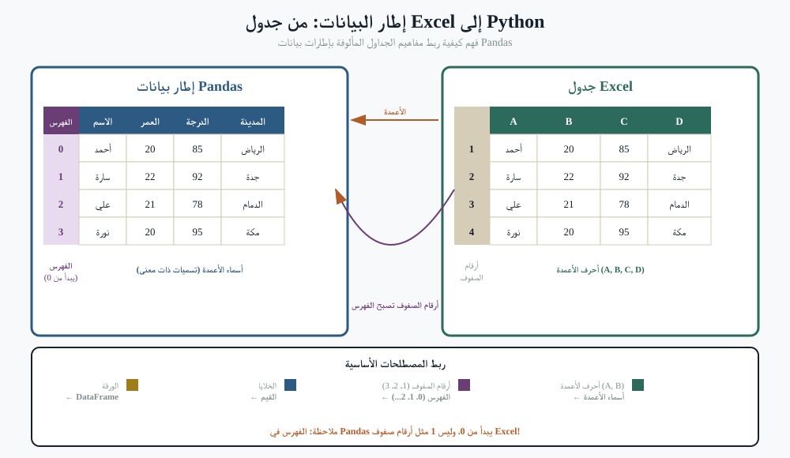
DataFrame جدول — صفوف وأعمدة، أسماء أعمدة في الأعلى، ومعرّف صفّ على اليسار (الفهرس). حين تلصق ملف CSV في ChatGPT يُصبح DataFrame في رأس الذكاء الاصطناعي. حين تقول «العمود الثالث» قد يسأل الذكاء الاصطناعي «أتقصد الثالث بالموضع أم بالاسم؟» — وهذا التمييز هو المفهوم التالي.
Series
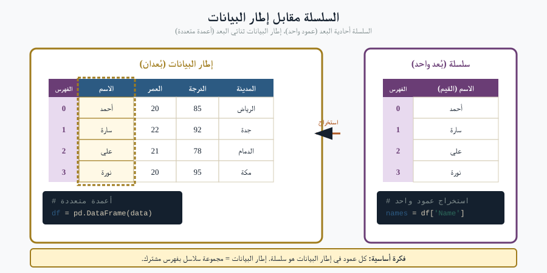
Series عمود واحد (أو صفّ واحد) من DataFrame. حين تطلب «متوسّط المبيعات» فأنت تطلب تجميع Series المبيعات.
iloc مقابل loc — موضع مقابل تسمية
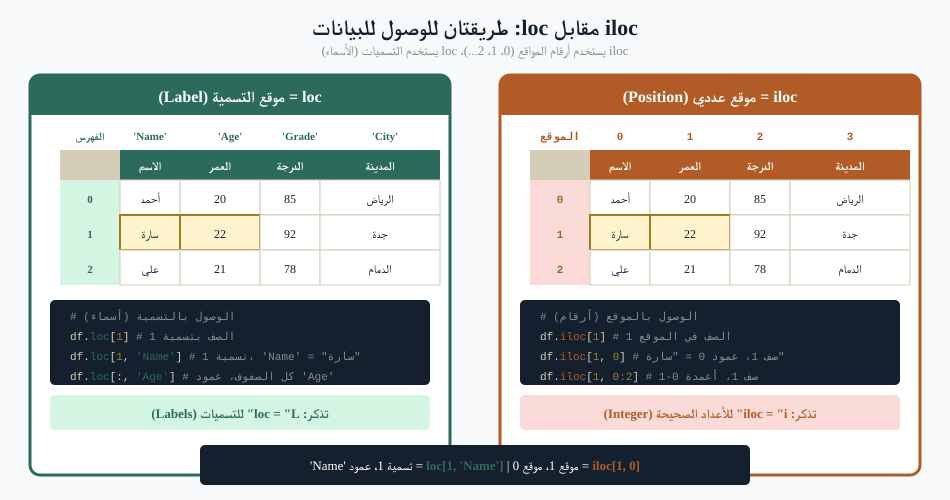
«أرني الصفّ 5» غامض. أتقصد الصفّ في الموضع 5 (iloc[5]) أم الصفّ الذي معرّفه 5 (loc[5])؟ غالبًا مختلفان. قول «الصفّ في الموضع 5» أو «الصفّ الذي معرّف العميل فيه يساوي 5» يُلغي السؤال.
NaN — البيانات المفقودة
NaN اختصار لـ "ليس رقمًا" ويعني مفقود. قد يكون لعمود متوسّط يبدو منخفضًا جدًا لأنه يضمّ خلايا فارغة تعامل معها الذكاء الاصطناعي بصمت معاملةَ الأصفار. اسأل دائمًا: «هل في هذا العمود قيم NaN؟ كيف يُتعامل معها؟»
groupby
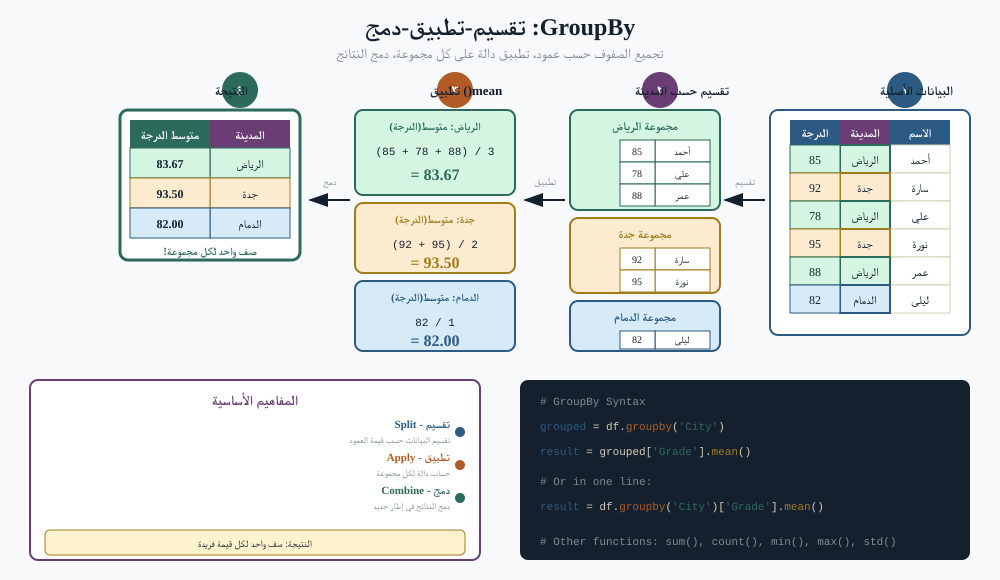
groupby أهمّ كلمة في مفردات بياناتك. تعني: «قسّم الصفوف حسب فئة، ثم افعل شيئًا داخل كل مجموعة». هذا ما يقصده الناس بـ «حسب المنطقة» أو «حسب الإدارة» أو «لكلّ عميل». استخدمها.
info() مقابل describe()
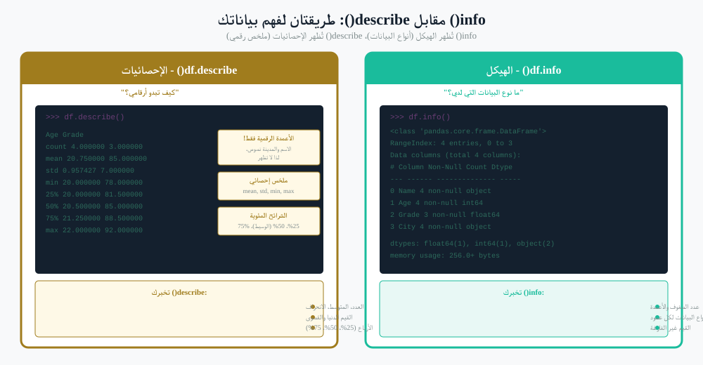
مُطالَبتان رائعتان للبدء حين تستلم مجموعة بيانات للتوّ:
- «أرني info() لهذا DataFrame». — سترى عدد الصفوف، الأعمدة الموجودة، أنواعها، وعدد القيم المفقودة في كلٍّ.
- «أرني describe() للأعمدة الرقمية». — سترى المتوسّط والوسيط والحدّ الأدنى والأعلى والانحراف المعياري لكلٍّ.
معرفة هاتين الكلمتين تنقل محادثة غامضة عن CSV إلى محادثة دقيقة.
خطّ المعالجة الكامل في جملة واحدة
«حمِّل ملف CSV إلى DataFrame، شغِّل info()، ثم جمِّع حسب المنطقة وجمِّع وسيط زمن الحلّ، تجاهل NaN، رتّب تنازليًا، واعرض الثلاث الأولى».
هذه الجملة ليست كودًا. إنها مُطالَبة. لكن لأنها تستخدم المفردات الصحيحة، سيُنتج الذكاء الاصطناعي بالضبط التحليل الذي أردته من المحاولة الأولى.
خلاصة اليوم
- المراحل الأربع — الاستكشاف، التخطيط، التنفيذ، التحسين — تنطبق على أيّ شيء يساعدك فيه الذكاء الاصطناعي، لا الكود فقط.
- أجب عن أسئلة التخطيط الأربعة قبل أن تطلب البدء. السؤال الرابع (معايير القبول) هو الأكثر تجاوزًا والأكثر ندامةً.
- شغِّل حلقة رفع ← معالجة ← إعادة ← حفظ ← تحقّق ← تكرار في دورات قصيرة. احفظ خارج المحادثة باكرًا وكثيرًا.
- استخدم هرم الاختبار: فحوص وحدة كثيرة رخيصة، فحوص تكامل أقلّ، فحوص شاملة نادرة.
- أنت المسؤول عمّا يُسلَّم. الذكاء الاصطناعي قام بالطباعة فقط.
- الوكلاء يُشغّلون الحلقة نفسها، لكن أسرع — وذلك هو القيمة والخطر.
- استخدم مفردات بيانات دقيقة (DataFrame، Series، groupby، NaN، iloc/loc، info/describe) في مُطالَباتك. المفردات أهمّ من البنية النحوية.
- تعرّف على عُدّة الوكلاء — Claude Code (مستضاف، صدارة المعيار)، OpenCode (مفتوح، سياديّ)، OpenClaw، Cursor، Cline، OpenHands. السؤال الأوّل على مستوى القائد نادرًا ما يكون أيّ أداة، بل كم استقلاليّة.
- MCP هو المعيار. اسأل «هل يستخدم MCP؟» في كل وكيل يقترحه فريقك أو بائعوك. هكذا تحفظ القابلية للتبديل والسيادة والتدقيق.